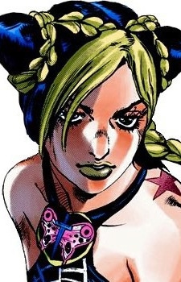
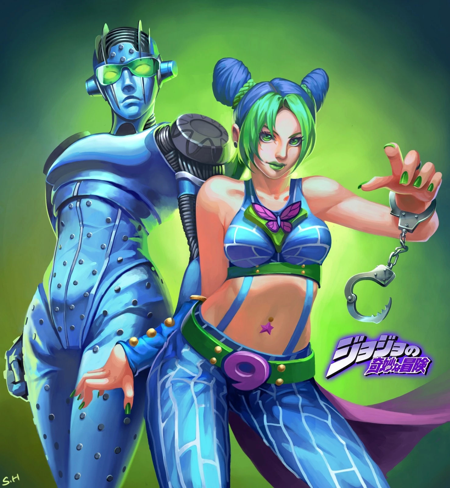
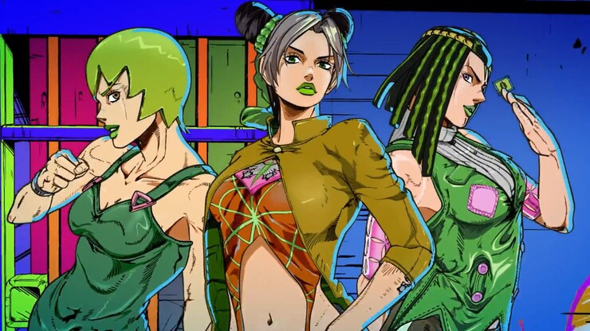
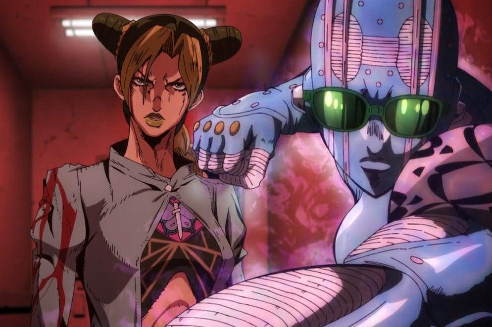
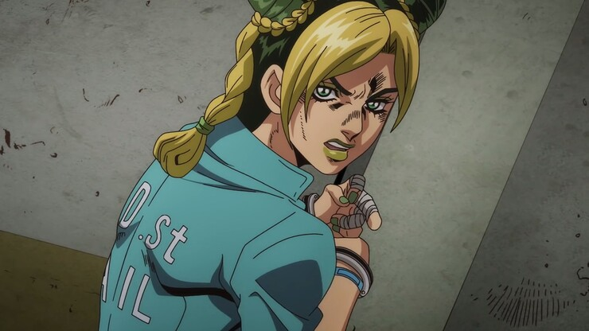

Джолін Куджо - головний протагоніст шостої частини серії Неймовірні пригоди ДжоДжо, Кам'яний океан і, відповідно, шостий ДжоДжо в серії. Вона - дочка американки та Джотаро Куджо, протагоніста Хрестоносців зоряного пилу.
Підставлена за вбивство у нетверезому вигляді W, Джолін вирушає до в'язниці Green Dolphin Street, де вона розслідує справу і бореться з найдовіренішим учнем ДІО, батьком Енріко Пуччі. Під час перебування у в'язниці Джолін будить свій стенд - Stone Free, що працює на основі струн.
Її волосся укладено у два "шари": Темна основа, що включає два великі пучки на маківці і короткий хвостик, що спускається по шиї; верхній шар забарвлений або освітлений, закручений у коси, які обвивають два пучки, з'єднуючись з короткою довжиною ззаду, і чубчик, що обрамляє її обличчя.
Як і у всіх інших членів сім'ї Джостар, у Джолін є невелика родимка у формі зірки на задній частині лівого плеча, ближче до шиї. У неї також є зображення крил метелика, витатуйоване на верхній частині лівого передпліччя, накладене на спрямований вниз кинжал, який також зображений на грудях її вбрання.
Изображение Джолин в Части 6 переходит от стройного и гладкого телосложения к более динамичному и атлетичному. Одновременно она работает с несколькими преимущественно тёмными нарядами, для которых характерен принт, напоминающий паутину.
Stone Free

Stone Free (стін-フリー Sutōn Fur?), іноді скорочується до S.F. (S?F?) — це стенд Джолін Куджо, що з'явився в шостій частині серії Неймовірні пригоди ДжоДжо, Кам'яний океан.
Stone Free зазвичай проявляється як здатність Джолін розплутувати своє тіло на нитці, але зрештою має базову форму потужного гуманоїдного стенду ближнього бою.
Stone Free - гуманоїдний стенд, ростом і статурою схожий на Джолін.
На ній надіта пара сонцезахисних окулярів різного ступеня затемненості, що приховують вертикально розташовані очі. На голові від верхньої щелепи до потилиці проходять чотири схожі на леза виступи, що межують з боками обох очей. З області вух виступають усічені шишки завдовжки третину ширини голови.
Вона носить еліптичні наплічники з малюнком під зміїну шкіру пітона [3] та шестикутні накладки на коліна. На кількох ділянках її світлого тіла видно волокнисту внутрішню частину, намотану горизонтально. На лобі, шиї, руках і ділянці від середини живота до верхньої частини ступнів є невеликі, рівномірно розташовані шипи/горбки.
Що складається з ниток, у розплутаному стані вона схожа на шовк і, мабуть, пахне милом.
Stone Free – унікальний стенд ближнього бою, який можна не лише викликати на бій, але й надати Джоліну інтегровані здібності. Як і у Star Platinum її батька, Stone Free Джолін є одночасно потужним та швидким, що робить його відмінним засобом для фізичної боротьби. Більше того, його струнна міць дає йому велику універсальність, яка дозволяє Джоліну виконувати безліч дій у бою.
Історія

Аракі розповідає, що під час створення «Чудової Ірен», у якій є головна героїня-жінка, він відчув, що читачі не сприймуть героїню-жінку, і зрештою скасував це. Редактор Аракі під час публікації Stone Ocean Хідето Азума, припустив, що Джолін має бути чоловіком, оскільки вони можуть втратити інтерес читачів. Аракі відмовився, пояснюючи це тим, чому Джолін має бути жінкою. Він вірить, що зміна точки зору з плином часу дозволяє йому створити жінку-протагоніста, якій дозволено боротися та потрапляти в болісні ситуації. Він також відчув, що те, що Джотаро врятувала його дочка, свідчить про її внутрішній ріст. Створюючи тему Джолін, Юго Канно пояснює, що оскільки вона є першою героїнею, для якої він написав композицію, він хотів гармонізувати її жіночність і силу, і вважає це складним завданням.

У JoJo's Bizarre Adventure: All-Star Battle та JoJo's Bizarre Adventure: Eyes of Heaven Джолін озвучувала Міюкі Савасіро. Коли було оголошено про аніме-адаптацію Stone Ocean, її озвучила Файруз Ай. Файруз вперше познайомилася з серіалом у старших шкільних роках, коли на платформі для обміну відео вона зустріла багато помітних крилатих фраз. Зацікавившись, вона помилково купила Stone Ocean, вважаючи, що це перша частина, перш ніж дізнатися про існування Phantom Blood. Згодом вона стала прихильницею серіалу та Джолін Куджо, називаючи персонажа своїм фаворитом серіалу. Під час прослуховування вона нервувала і плакала, вважаючи, що не показала всіх своїх можливостей. Персонал здивував її, дозволивши їй прийти разом із персоналом єдиною людиною в кімнаті та продекламувати рядки, у яких їй сказали, що вона отримала роль. Їй наказали зобразити Джолін такою, якою вона була б дочкою Джотаро, і їй було важко, бо вона була надто рішучою, і її голос став жорстким. Вона також намагалася зобразити рішучість персонажа врятувати Джотаро. Режисер сказав Фейрузі, що голос Джолін повинен бути сильнішим після 13 епізоду, що змусило її перечитати манґу, щоб підготуватися. Вона також хотіла переконатися, що Джолін не звучить так круто і низько, як Джотаро, бажаючи зробити персонажа з виразним голосом. Спочатку Фейруз було важко викрикнути «Ora» Джолін, тому вона звернулася до Оно Дайсуке, який дав їй кілька порад щодо того, як це зробити. Вона роздумувала про те, як у неї були найгірші ролі з акторського складу, і хоче використати Джолін як можливість для свого кар’єрного зростання. Хоча їй здавалося, що вона не чує чітко, персонал сказав їй, що вона стає краще.

Джолін Куджо та її хлопець Ромео Джіссо збивають перехожого, і її фальшиво звинувачують у інциденті після того, як Ромео переконує її приховати інцидент і використовує її як приманку. По дорозі до в'язниці «Green Dolphin Street» вона отримала кулон від свого батька, Джотаро, і вкололася ним, отримавши свій стенд, який пізніше назвала Stone Free. Її відвідав батько який пізніше виявляє, що інцидент є задумом одного із послідовників Діо, щоб підставити Джолін та намагається допомогти їй втекти. Однак стенд, відомий як Whitesnake, викрадає спогади Джотаро та його стенд як ДИСК, вводячи його в кому. Усвідомлюючи, наскільки батько любив її та його бажання захистити її, вона клянеться залишитися, щоб врятувати його життя та знайти людину, яка є користувачем Whitesnake. Потім до неї приєдналися інші користувачі стендів Емпоріо Алніньо, Ермес Костелло, Фу Файтерс, Везер Репорт і Нарцисо Анасуї.